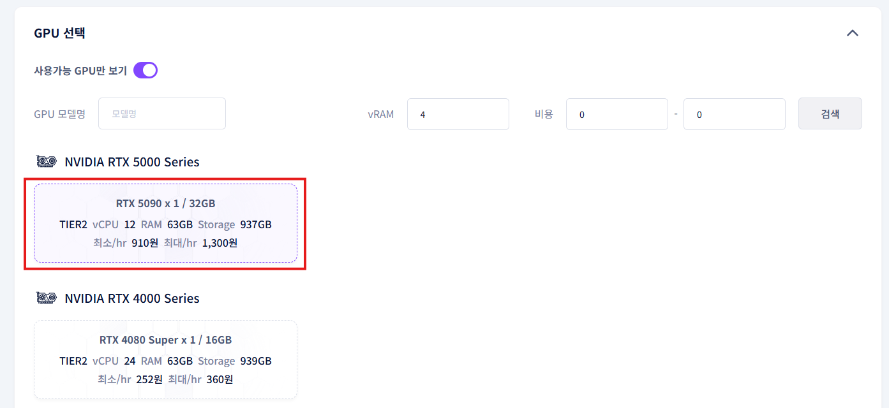

Wan2.2 사용 가이드
사전 준비 사항은 다음과 같습니다:
1. gcube 회원가입
먼저 [gcube 홈페이지]에서 회원가입을 진행해주세요. 회원 가입은 Microsoft 또는 Google로 가능합니다.
2. 포인트 충전
gcube 로그인 후, 포인트를 충전하셔야 모델 실행이 가능합니다. [포인트 충전 페이지]에서 충전을 진행해주세요.
Wan2.2는 어떤 AI 모델인가?
해당 문서는 이미지에서 비디오로 자동 변환해주는 AI 모델 가이드에 대한 문서입니다.
자세한 작동 원리 또는 기술적인 문의는 아래 Huggingface에서 가능하며 도커 이미지에 관한 상세 설명은 그 아래 링크에서 확인 가능합니다.
https://huggingface.co/QuantStack/Wan2.2-I2V-A14B-GGUF
https://hub.docker.com/r/nykk3/comfyui-wan2.2-gguf
워크로드 생성하기
사전 준비를 모두 마치셨다면 이제 워크로드에서 생성해보도록 하겠습니다.
1. gcube:지큐브 홈페이지에 로그인한 다음, 워크로드 메인 페이지로 들어가 줍니다.
2. 좌측 > 새 워크로드 생성 클릭

3. 설명란에 원하는 워크로드 제목을 입력

3. 컨테이너 저장소 유형: 도커 허브 선택
4. 컨테이너 이미지: [ nykk3/comfyui-wan2.2-gguf:q4ks-14b-i2v-cuda12.8 ] 입력 후 이미지 검증 클릭 / 검증 완료 후 컨테이너 포트에 [8188] 입력 ****

5. 옵션 항목에서 [컨테이너 환경 변수]를 입력
| Key | Value |
|---|---|
| WEB_PASSWORD | Str0ngP@ssw0rd123! |
| COMFYUI_USERNAME | admin |
| COMFYUI_PASSWORD | MyS3cureP@ssw0rd! |
| COMFYUI_ARGS | --listen 0.0.0.0 --port 8188 --use-sage-attention |
※ 비밀번호(PASSWORD)는 원하시면 12자 이상으로 자유롭게 설정하셔도 됩니다.

6. 사용하고 싶은 GPU 선택 (※ 많은 VRAM을 요구하기에 RTX 5090을 적극 추천)

7. 즉시배포 체크 / 마지막으로 등록 버튼 클릭

8. 워크로드 생성이 완료되면, 서비스 URL을 클릭하여 Wan 2.2 모델을 직접 체험해볼 수 있습니다.
※ 워크로드는 배포 후, 완전 생성까지 약 3~5분 정도 소요됩니다. (GPU 사양에 따라 차이 있음)

서비스 URL에서 위와 같은 화면이 나온다면 아직 준비되지 않았다는 것을 의미합니다.
2~3분 뒤에 서비스 URL을 다시 클릭하시면 됩니다.
9. 정상적으로 실행된다면 왼쪽 사이드바에서 워크플로(파일 모양)에서 Wan2.2 모델을 누르면 아래와 같은 화면이 표시됩니다.

Wan2.2 사용 방법
Wan2.2가 정상적으로 실행되었다면 여러가지 설정을 통해 이미지를 비디오로 치환할 수 있습니다.
이번 가이드에서는 간단히 비디오를 생성하는 방법에 대해서 설명하겠습니다.
Step 1. 이미지 업로드
비디오로 치환하고자하는 이미지를 업로드 합니다.

Step 2. 비디오 설정
비디오의 픽셀 너비와 높이, 영상 길이, 영상 생성 개수를 설정합니다.


※ 비디오 설정에 관한 몇 가지 권장 및 주의 사항들입니다.
1. Wan2.2는 비디오 해상도 480P[854 x 480]와 720P[1280 x 720]를 권장하고 있습니다.
2. 해상도가 높을수록, 영상 길이가 길어질수록 비디오 생성에 시간이 오래 걸립니다.
3. 영상 길이는 프레임 수로 표기됩니다. FPS와 합쳐 영상 길이가 결정됩니다.
ex) [길이: 121 프레임] / [FPS: 24] = 약 5초
4.
Step 3. (옵션) 프롬프트 설정
프롬프트 입력을 통해 AI에게 추가하고 싶은 요소나 빼고 싶은 요소를 유도하도록 설정할 수 있습니다. (한글 지원)
해당 부분은 어디까지나 부가적인 역할이기에 기본 세팅 그대로 진행하셔도 무방합니다.
(Negative Prompt)에는 비디오 변환에 악영향을 끼칠 부분들이 사전에 입력되어 있습니다.

Step 4. image-2-video 변환 실행
화면 하단의 실행을 클릭해 변환을 시작합니다.
설정에 따라 짧게는 10분에서 최대 한시간 반정도의 시간이 걸릴 수 있습니다.

Step 5. 결과물 확인
원하는대로 변환이 되었는지 최종 확인을 진행합니다. 필요에 따라 저장도 진행할 수 있습니다.